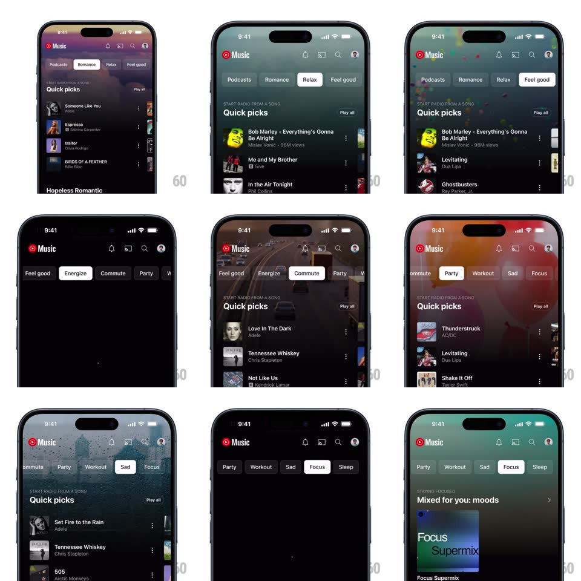

Media
Frame-by-frame

Rebuild this interaction 1:1: YouTube Music's mood tabs - tapping a mood pill (Romance, Relax, Feel good, Energize, Commute, Party, Workout, Sad, Focus, Sleep) crossfades the entire background to a mood-matched gradient scene and swaps the Quick picks list content underneath.

Rebuild this interaction 1:1: YouTube Music's mood tabs - tapping a mood pill (Romance, Relax, Feel good, Energize, Commute, Party, Workout, Sad, Focus, Sleep) crossfades the entire background to a mood-matched gradient scene and swaps the Quick picks list content underneath. ## Integration Integration: stack-agnostic spec - springs given as stiffness/damping, timed motions as duration + curve; map every value to your framework and animation library of choice. ## Scene Dark app with the Music header and a horizontally scrolling pill row. Each mood owns a full-bleed backdrop: Romance = purple dusk clouds, Relax = misty green forest, Party = warm red-orange bokeh, Sad = rain-streaked blue window, Focus = teal gradient. Below: "START RADIO FROM A SONG / Quick picks" list with per-mood tracks. ## Motion spec Pattern: mood-scene crossfade with content swap. - Tap a pill: the pill fills white with dark text (150ms) while the previous pill deflates; the pill row auto-scrolls to keep the selection visible. - Background: the outgoing scene crossfades to the new mood's scene (500ms ease-in-out), with a subtle upward drift (translateY 12px) on the incoming scene for depth. - Content: the list fades out + drops 8px (180ms), then the new list fades in + rises (220ms, 80ms overlap) - a dip-to-black style swap, never a hard cut. - The header icons stay constant; only the scene and list change. - Scenes are live: slow ambient motion in the backdrop (clouds drift, bokeh shimmers). ## Calibration - Scene color sets the whole app's tint - pill row, header chrome, and list all sit ON the scene, nothing has an opaque card behind it. - The pill row itself keeps a transparent track so the scene shows through. ## Reduced motion Scenes crossfade without drift; lists swap with a simple fade. ## Don't miss - Adjacent-mood pill taps still run the full scene transition - no shortcut when moods are neighbors. - The "Play all" affordance and list row layout are identical across moods; only tracks and art change.